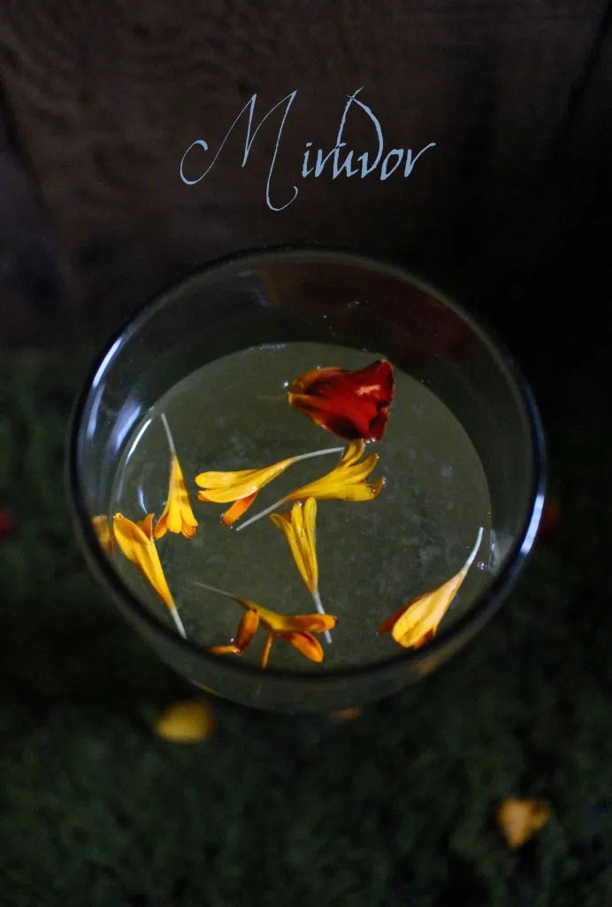

"Give them this" said Gandalf, searching in his pack and drawing out a leathern flask. "Just a mouthful each, for all of us. It is very precious. It is miruvor, the cordial of Imladris. Elrond gave it to me at our parting. Pass it round!"
As soon as Frodo had swallowed a little of the warm and fragrant liquor he felt a new strength of heart, and the heavy drowsiness left his limbs. The others also revived and found fresh hope and vigor. But the snow did not relent.
Ingredients
Preparation